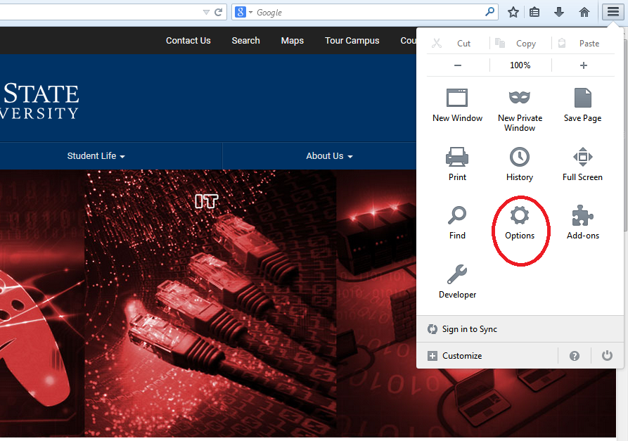

Securing Your Browser
Many web browsers are configured to provide increased functionality at the cost of decreased security.
Common tools in browsers that provide functionality are: Cookies, Pop-ups, Plug-ins, scripting languages such as Javascript and VBScript.
Cookies are files placed on your system to store data for specific websites. A cookie can contain any information that a website is designed to place in it - information about the sites you visit or even credentials for accessing the site. If an attacker can obtain the cookie for a site on your computer, then they may have access to your account on that site! Cookies can also be used to uniquely identify visitors of a website, which some people consider a violation of privacy.
Plug-ins are applications intended for use in the web browser such as Adobeflash. Plug-ins may contain programming flaws that may put your computer at risk. For example poorly written programs may result in a buffer overflow crashing your computer!
Javascript or VBScript are scripting languages that are used to make websites more interactive. Maliciously written scripts may introduce vulnerabilities in your system. For example, they may contain malware that escape the Antivirus software!
In almost any browser, you can disable, restrict, or allow the use of these tools. See below for quick instructions on how to get to the settings pages for these tools:
Chrome browser:
1. Type chrome://settings in the url box OR click the Chrome menu on the browser toolbar and select Settings
2. Click on “Show advanced settings” at the bottom of the page.
3. Scroll down to see “Privacy” and click on “Content settings…” box.
4. This screen allows you to set the settings as you prefer.
Before you make changes in your settings visit Chrome’s support page on content settings:
https://support.google.com/chrome/answer/114662
For more information on how to secure your browser visit
https://www.us-cert.gov/publications/securing-your-web-browser#how_to_secure
Firefox Browser:

These settings can be accessed through the “Options” menu.
- Configure privacy settings: Under the “Privacy” tab, complete the following steps. These measures ensure that Firefox is storing only as much of your information as it needs to function normally.
- Select “Use custom settings for history.”
- Deselect “Remember my browsing and download history.”
- Deselect “Remember search and form history.”
- Deselect “Accept third-party cookies.”
- Set cookie storage to “Keep until I close Firefox.”
- Select “Clear history when Firefox closes.”
-
Configure security settings: Under the “Security” tab, choose the following settings. These steps prevent Firefox from saving your passwords and keep you from visiting potentially harmful sites.
-
Verify that “Warn me when sites try to install add-ons,” “Block reported attack sites,” and “Block reported web forgeries” are all selected.
Deselect “Remember passwords for sites.”
-
Disable javaScript: Deselect “Enable JavaScript” under the “Content” tab. JavaScript is notorious for containing security vulnerabilities and it is recommended that users only enable it for trusted sites.
-
Enable pop-up blocking: Verify that “Block pop-up windows” is selected under the “Content” tab. This feature should be turned on by default as it protects users from unwarranted advertisements and windows.
-
Don’t sync: Avoid using Firefox Sync. By doing so you prevent Firefox from storing your logins, passwords, and other sensitive information.
-
Turn on automatic updates: Verify that “Automatically install updates” is selected in the “Update” tab under “Advanced.” Doing so will ensure that your browser receives critical security updates. Verify that “Automatically update Search Engines” is selected as well.
-
Use secure protocols: Verify that “Use SSL 3.0” and “Use TLS 1.0” are selected in the “Encryption” tab under “Advanced.”
Microsoft Internet Explorer 10:
These settings can be accessed through the “Internet Options” menu.
-
Configure security settings: Under the “Security” tab, do the following:
-
Set security zones: IE offers the option to configure different security settings for different “zones,” including the Internet, local intranet, trusted sites, and restricted sites. Set up the zones for Intranet, Trusted Sites, and Restricted sites to your desired security level.
-
Set Internet zone security to “Medium High” or higher. This blocks certain cookie types, enables ActiveX filtering, and implements several other default settings for increased security.
-
Disable javaScript: Click “Custom Level,” locate the “Active Scripting” setting, and select “Disable.” It is recommended that users disable JavaScript because of the high amount of vulnerabilities it contains.
-
Automatically clear history: Select “Delete browsing history on exit” under the “General” tab. Clearing your history at the end of each session helps to limit the amount of information IE saves when you browse.
-
Configure privacy settings: Under the “Privacy” tab, complete the following steps:
-
Privacy setting: Set the Internet zone privacy to “Medium High” or higher. This blocks certain cookie types to prevent sites from tracking or contacting you without your consent.
-
Location: Select “Never allow websites to request your physical location.”
-
Pop-up Blocker: Double check that Pop-up Blocker is enabled.
-
Configure Advanced Security settings: Scroll down to the “Security” section under the “Advanced” tab and do the following:
-
Ensure that all default settings are in place. If you aren’t sure, click “Restore advanced settings” before making any other changes.
-
Select “Do not save encrypted pages to disk.” This will delete files cached from HTTPS pages when the browser is closed.
-
Select “Empty Temporary Internet Files folder when browser is closed.” This prevents IE from storing your personal info (logins, passwords, activity, etc) beyond your browsing session.
-
Turn off autoComplete: The AutoComplete feature should be turned off for forms and usernames/passwords. Keeping AutoComplete turned off ensures that your sensitive information isn’t being stored unnecessarily.
-
Tracking protection: IE’s Tracking Protection feature keeps your browsing private from specified third-party websites. This feature can be accessed through IE’s “Safety” menu. In order to use Tracking Protection you will need to provide a Tracking Protection List that names all of the sites you don’t want your information being sent to. You can create a list yourself or download lists online.
Which is the Most Secure Browser?
Nominating one browser as the most secure is difficult. Since each browser is regularly updated with security patches, the rankings for most secure browser could change at any time. As of today, Veracode recommends Google Chrome as the most secure browser.
{% endblock %}